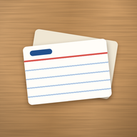

Gizlilik Politikası
Son güncelleme: 30 Ekim 2026
Bilgi Odası, SRA Atölye'nin geliştirdiği bir çalışma uygulamasıdır. Bu sayfa, uygulamanın hangi bilgileri kullandığını, nerede sakladığını ve bunları nasıl silebileceğini anlatır.
- Kartların, fotoğrafların ve PDF'lerin yalnızca senin telefonunda saklanır. Hiçbir sunucuya gönderilmez.
- Üyelik isteğe bağlıdır. Üye olursan adın ve e-posta adresin saklanır.
- Kullanım istatistikleri kendiliğinden kapalıdır. Yalnızca sen açarsan gönderilir.
- Uygulamada reklam yoktur. Bilgilerin satılmaz, reklam için kullanılmaz.
- Çocuklar da kullanabilir: reklam yok, konum ve reklam kimliği kullanılmaz.
- Hesabını istediğin zaman silebilirsin.
1. Telefonunda kalan bilgiler
Destelerin, kartların, kartlardaki fotoğraflar ve PDF'ler, ip uçların, tekrar geçmişin ve ayarların yalnızca telefonunun içinde saklanır. SRA Atölye bunları göremez.
Uygulamayı telefonundan kaldırırsan bu bilgiler de silinir. "Yedek al" ile oluşturduğun yedek dosyası, yalnızca senin seçtiğin yere kaydedilir.
2. Üyelik (isteğe bağlı)
Uygulamanın bütün çalışma özellikleri üye olmadan kullanılabilir. Üye olursan şu bilgiler saklanır:
- adın,
- e-posta adresin,
- şifren. Şifreni biz göremeyiz; yalnızca şifrenin güvenli bir özeti saklanır.
Bu bilgiler hesabını açmak, giriş yapmanı sağlamak ve e-posta adresini doğrulamak için kullanılır.
Üye olurken doğum ayın ve yılın da sorulur. Bu bilgi yalnızca üye olup olamayacağına bakmak için o anda telefonda kullanılır; saklanmaz, gönderilmez (bkz. Çocuklar).
3. Kullanım istatistikleri (isteğe bağlı)
Bu seçenek kendiliğinden kapalıdır. Üye olurken ya da Hesabım sayfasında "Kullanım istatistiklerimi paylaş" seçeneğini açarsan şunlar gönderilir:
- adın ve e-posta adresin (sürpriz hediyeler için sana ulaşabilmemiz için),
- uygulamayı ilk ve son kullandığın gün, kaç gün kullandığın,
- kart, deste ve tekrar sayıların; hangi özellikleri kaç kez kullandığın (örneğin kamera, arama, takvim),
- birkaç ayar (örneğin tema, hatırlatma açık mı),
- uygulamanın sürümü ve hangi ortamda çalıştığı (Android ya da web).
Kartlarının içeriği, fotoğrafların ve PDF'lerin hiçbir zaman gönderilmez.
Bu bilgileri yalnızca SRA Atölye görebilir. Uygulamayı geliştirmek ve hediye vermek için kullanılır. İnternet yokken telefonunda bekler, bağlanınca gönderilir. Paylaşımı kapattığında sunucudaki istatistiklerin silinir.
"Ben de istiyorum"
Bulut hafızası gibi beklenen bir özellik için "Ben de istiyorum"a basarsan, hesabının kimlik numarasıyla birlikte yalnızca bu isteğin ve saati saklanır. Adın ve e-posta adresin bu kayda yazılmaz. SRA Atölye yalnızca kaç kişinin istediğini görür. İsteğini aynı yerden geri alabilirsin. Hesabın yokken basarsan istek yalnızca telefonunda bekler; giriş yapınca gönderilir.
Premium hediyesi
Sana Premium hediye edersek, hediyenin sana ulaşması için e-posta adresinden üretilen şifreli bir kod (SHA-256 özeti) ve hediyenin bitiş tarihi, uygulamanın ortak ayarlarında saklanır. E-posta adresinin kendisi bu ayarlara yazılmaz. Hediye, e-posta adresini doğruladığında açılır.
4. İzinler
- Kamera: Kart fotoğraflarını uygulamanın içinden çekmek için. Fotoğraflar telefonunda kalır. İzin vermezsen telefonunun kendi kamerası ya da galerisi kullanılır.
- Bildirim: Günlük tekrar hatırlatması için. Hatırlatmalar telefonunda kurulur; bunun için hiçbir bilgi gönderilmez.
- İnternet: Yalnızca üyelik, isteğe bağlı istatistikler, "Ben de istiyorum" isteği ve uygulamanın ortak ayarlarını (örneğin kutuların tekrar süreleri) almak için.
5. Bilgileri kimler işler?
Üyelik bilgileri, istatistikler, "Ben de istiyorum" ve hediye kayıtları, Google'ın Firebase hizmetinde (Firebase Authentication ve Cloud Firestore) saklanır. Google bu hizmeti çalıştırırken güvenlik için IP adresi gibi teknik bilgileri de işleyebilir. Google'ın sunucuları Türkiye dışında olabilir.
Bilgilerin bunun dışında kimseyle paylaşılmaz ve satılmaz. Yasaların zorunlu kıldığı durumlar bunun dışındadır.
Google'ın kuralları: Google Gizlilik Politikası · Firebase ve gizlilik
6. Ne kadar süre saklanır?
- Hesap bilgilerin, hesabını silene kadar.
- İstatistiklerin, paylaşımı kapatana ya da hesabını silene kadar.
- "Ben de istiyorum" isteğin, geri alana ya da hesabını silene kadar.
- Hediye kaydın, hediyenin süresi bitene kadar. Süresi biten kayıtlar temizlenir; istersen daha önce silinmesini de isteyebilirsin.
7. Bilgilerini silmek
- Uygulamadan: Ayarlar'ın en üstündeki hesap satırına dokun, açılan Hesabım sayfasında Hesabımı sil'e bas. Hesabın, adın, e-posta adresin, istatistiklerin ve "Ben de istiyorum" isteğin silinir.
- Uygulamaya giremiyorsan: Hesap silme sayfasındaki adımları izle.
Kartların sunucuda olmadığı için hesabın silinince de telefonunda kalır. Uygulamayı kaldırdığında onlar da silinir.
8. Hakların
6698 sayılı Kişisel Verilerin Korunması Kanunu (KVKK) kapsamında hakkındaki bilgileri öğrenme, düzeltilmesini ya da silinmesini isteme hakkın vardır. Bunun için bize e-postayla yazabilirsin.
9. Çocuklar
Bilgi Odası'nı çocuklar da kullanabilir.
- Üye olmadan bütün çalışma özellikleri açıktır. Bu durumda hiçbir kişisel bilgi gönderilmez; kartlar telefonda kalır.
- Uygulamada reklam yoktur. Reklam kimliği ve konum kullanılmaz.
- Üye olurken doğum ayı ve yılı sorulur. Bu bilgi yalnızca o anda telefonda kullanılır; saklanmaz, hiçbir yere gönderilmez.
- 13 yaşından küçükler üye olamaz. 13-18 yaş arasındakiler velilerinin izniyle üye olabilir.
- 13 yaşından küçük birinin hesap açtığını öğrenirsek o hesabı ve bilgilerini sileriz. Veliler, çocuklarının bilgileri için bize yazabilir.
10. Değişiklikler
Bu metin değişirse bu sayfada güncellenir. Son güncelleme tarihi en üstte yazar.
İletişim
SRA Atölye · E-posta: sra.atolye@gmail.com